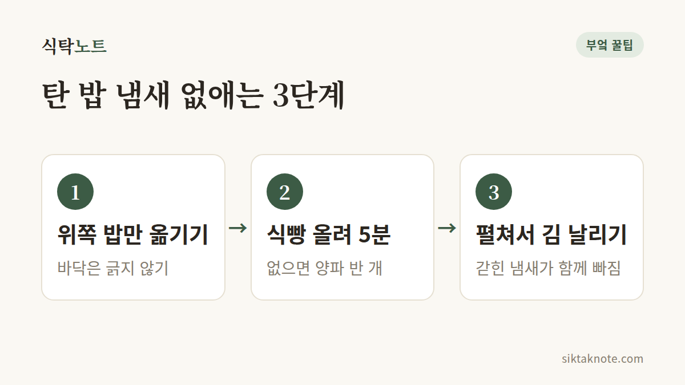

밥에서 탄 냄새가 날 때, 없애는 법

3줄 요약
- 탄 부분은 건드리지 말고, 위쪽 멀쩡한 밥만 얼른 다른 그릇에 옮겨 주세요.
- 마른 식빵 한 조각을 밥 위에 올려 5분만 두면 냄새가 많이 빠져요.
- 그래도 냄새가 남으면 밥을 넓게 펼쳐서 김을 날려 주면 돼요.

일단 위쪽 밥부터 옮겨요
밥솥 뚜껑을 열었는데 훅 올라오는 탄내, 한숨부터 나오죠. 그래도 솥 바닥에서 탄 부분과 위쪽 밥은 상태가 전혀 다르거든요.
탄 부분은 그대로 두고, 주걱으로 위쪽 밥만 살살 떠서 다른 그릇에 옮겨 담아 주세요. 바닥까지 박박 긁으면 냄새 밴 밥이 같이 딸려 와요. 옮기기 전에 밥솥의 취사나 보온을 끄고 플러그를 뽑아 두면, 남은 열로 바닥이 더 타는 걸 막을 수 있어요.

식빵 한 조각이면 돼요
옮겨 담은 밥 위에 마른 식빵 한 조각을 올리고 뚜껑을 덮어 5분쯤 두었다가 빼내세요. 빵이 냄새를 쏙 빨아들여요. 식빵이 없는 날엔 양파 반 개를 올려도 비슷한 효과가 있어요. 5분이 지나면 바로 꺼내 주세요. 너무 오래 두면 밥이 눅눅해지거나 빵 냄새가 배어들 수 있어요. 냄새를 머금은 식빵과 양파는 다시 먹지 말고 버려 주세요.
그래도 냄새가 남아 있으면 밥을 넓은 그릇에 펼쳐서 김을 날려 주세요. 갇혀 있던 냄새가 김과 함께 빠져나가요. 주걱으로 가볍게 뒤집어 가며 식히면 더 고르게 빠져요.

탄내가 빠졌는지 확인해요
밥이 뜨거울 때는 김과 함께 냄새가 확 올라와서 실제보다 세게 느껴질 수 있어요. 한 김 식힌 뒤에 한 숟가락 떠서 냄새를 맡고 맛을 보세요. 냄새가 거의 안 나면 그대로 드셔도 되고, 은은하게 남았다면 볶음밥이나 카레처럼 향이 센 요리에 쓰면 덜 느껴져요. 입안에 쓴맛이 남을 정도라면 새로 짓는 편이 나아요. 냄새가 조금 남았을 땐 새 식빵으로 바꿔서 5분 더 두어도 돼요. 밥을 얼려 두려는 거라면 냉동하기 전에 냄새부터 확인하세요. 냉동한다고 탄내가 없어지지는 않거든요.
냄비나 압력솥으로 지은 밥이 탔을 때도 순서는 같아요. 불부터 끄고 위쪽 밥을 옮겨 담으면 돼요. 밥을 조금만 지었다면 옮길 밥이 얼마 안 되고 탄내도 금방 퍼지니, 한 숟가락 맛을 보고 아니다 싶으면 새로 짓는 쪽이 빨라요. 탄내를 가리려고 향이 센 재료를 섞는 건 권하지 않아요. 냄새가 뒤섞여서 오히려 먹기 힘들어져요.
탄내는 어떻게 밥에 스며들까
밥이 되는 중에 물이 먼저 마르면 솥 바닥 온도가 올라가면서 쌀이 갈색으로 눌고, 더 지나면 까맣게 타요. 물 양을 대충 맞췄거나 뚜껑이 덜 닫혀 김이 샜을 때 이런 일이 잘 생겨요. 바닥의 밥이 타면서 생긴 연기 성분이 솥 안의 김을 타고 올라가 위쪽 밥에 배어드는 거예요. 그러니 빨리 옮길수록 덜 남아요.
이런 밥은 새로 짓는 게 마음 편해요
탄 부분이 섞이면 쓴맛이 밥 전체로 퍼지니, 따로 덜어 버리는 쪽이 나아요. 냄새가 심하게 뱄다면 아깝더라도 새로 짓는 편이 낫고요. 살짝 탄 정도라면 위 방법만으로 충분히 먹을 수 있어요.
노릇하게 살짝 눌은 정도는 누룽지처럼 구수하게 먹기도 하지만, 까맣게 변한 조각이 밥알 사이에 섞였다면 골라내기보다 버리는 편이 마음 편해요. 새로 지을 때는 내솥을 깨끗이 씻고, 뚜껑 안쪽과 고무패킹에 탄 냄새가 남아 있지 않은지도 살펴본 뒤 시작하세요.
솥 바닥은 이렇게 불려요
탄 내솥은 식은 뒤에 물을 받아 한참 불려 두면 눌어붙은 게 쉽게 떨어져요. 뜨거울 때 찬물을 부으면 내솥이 상할 수 있고, 철수세미로 긁으면 코팅이 벗겨질 수 있으니 부드러운 수세미를 쓰세요. 눌은 자국이 한 번에 안 지워지면 불리기를 한 번 더 해 주면 돼요. 내솥 코팅이 많이 벗겨졌다면 밥이 더 잘 눌어붙으니, 새 내솥으로 바꿀지도 생각해 보세요.
밥이 자꾸 눌는다면 물이 눈금보다 적었는지, 쌀이 솥 한쪽에 몰려 있지 않았는지 살펴보세요. 보온을 오래 걸어 두어도 바닥이 마르고 눌어서, 보온은 12시간을 넘기지 않는 게 좋다고 해요. 오래 두고 먹을 밥은 한 끼씩 얼려 두면 편하고요. 방법은 남은 밥 냉동 보관과 맛있게 데우는 법에 적어 두었어요.